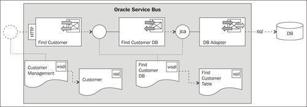
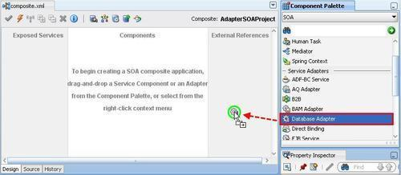
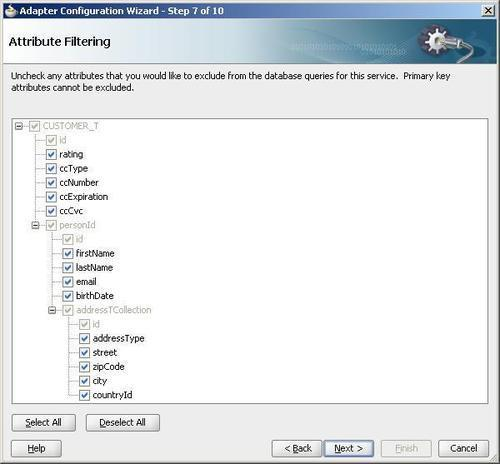
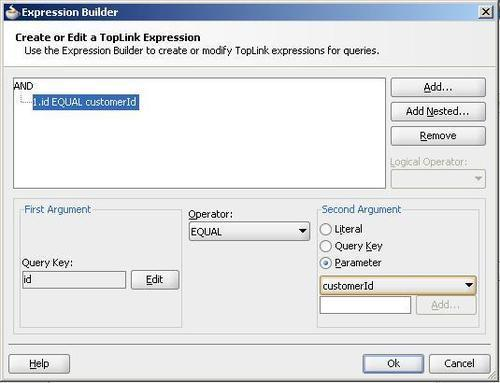
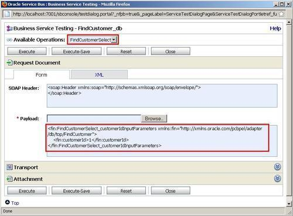
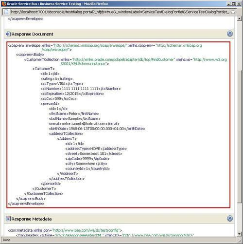

In this recipe, we will configure an outbound DB adapter, in order to read data from multiple database tables. The adapter will be invoked from a business service, which can be generated using Eclipse OEPE.
The business service implements a WSDL-based interface. In a real life scenario, the business service would be exposed using a proxy service. We won't show that here, check the recipes in Chapter, Creating a basic OSB service, to learn how to do that:

For the configuration of DB adapter, we will use JDeveloper and then switch to Eclipse to implement the proxy service wrapping the inbound DB adapter.
For this recipe, we will use the database tables created with the OSB Cookbook standard environment. Make sure that the connection factory is set up in the database adapter configuration as shown in the Introduction of this chapter.
You can import the OSB project containing the base setup for this recipe into Eclipse from \chapter-7\getting-ready\using-db-adapter-to-read-from-table.
First we create the DB adapter, which will implement the query from the database. In JDeveloper, perform the following steps:
composite.xml of the project ReadFromDB.
FindCustomer into the Service Name field. osbCookbookConnection into the Connection Name field. osb_cookbook into the Username and Password field. eis/DB/OsbCookbookConnection. A DB connection factory with this JNDI alias has been created as shown in the Introduction section of this chapter.
customerId into the Parameter Name field and click on OK.
We have created the DB adapter used to query a customer and its person and address data. This is all we need to do in JDeveloper. Let's go back to Eclipse OEPE and perform the following steps to make the DB adapter usable in the OSB:
FindCustomer_db.jca file and select Oracle Service Bus | Generate Service from the context menu. business folder for the location of the business service. business folder.Let's test the business service through the Service Bus console. Perform the following steps:


We have used the DB adapter wizard to create an adapter configuration for retrieving data from the database. The DB adapter supports reading information from multiple tables and will create a hierarchical XML document, based on the relationships defined between the tables. Therefore, we had to specify the possible relations when configuring the DB adapter. The XML schema generated by the adapter reflects that hierarchy:
The DB adapter also generates a WSDL with one operation FindCustomerSelect, implementing the read from the tables. The business service generated from Eclipse OEPE will implement that WSDL. This means that the contract of the business service is created in a contract-last fashion, because it's generated based on the definition of the database. When testing the business service through the test console, we could see in the response the generated names, such as CustomerTCollection and AddressT. This is ok, as long as we don't expose these element names to the outside of the OSB, which is always assured on a business service, as it is not directly callable from outside. It's important that the proxy service we would use to expose the service implements its own WSDL and does not just use the one generated by the adapter. The Chapter 1, Creating a basic OSB service, has multiple recipes showing how to achieve that.